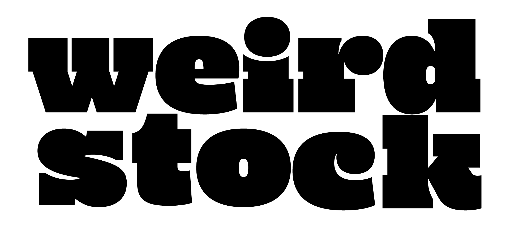
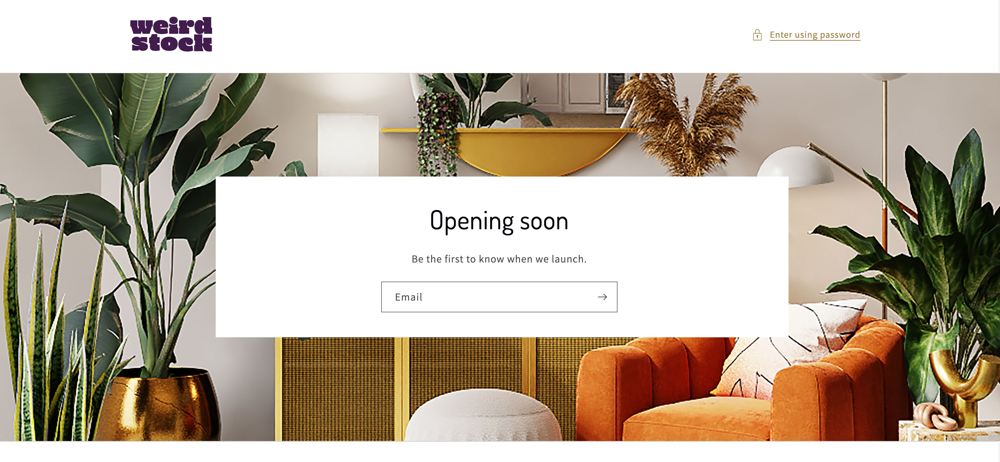
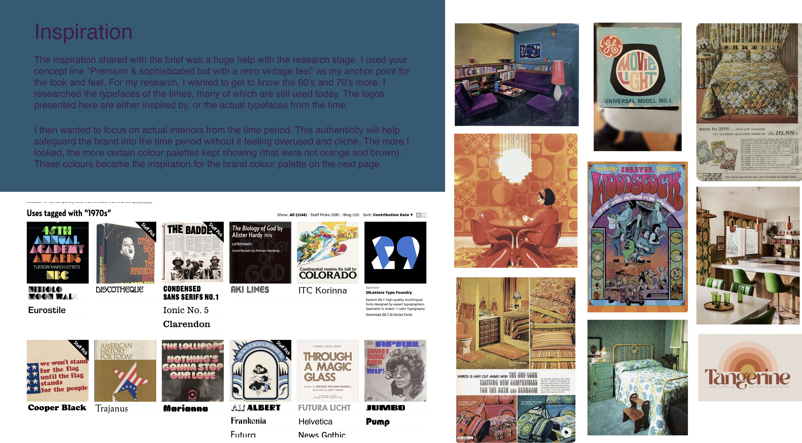

05
05
Case Study · Brand Identity · Logo Design · Illustration
05
Case Study · Brand Identity · Logo Design · Illustration

A UK client came to me with a name — Weirdstock — and a clear brief. She wanted a luxury bedding brand that felt high-end but with a retro 60s and 70s soul. For people who love pattern and colour but couldn't find bedding that matched their taste.
When she gave me the name, I was immediately drawn to Woodstock. The energy of the festival, the graphic design of the era, the psychedelic typography. That became the anchor for the whole identity.
I researched typefaces of the period — many still used today — and settled on Mighty Slab as the primary typeface. It has that bold, rounded quality that feels authentically 60s without being kitschy. From there I developed a primary logo, secondary logo, animated version, and a colour palette rooted in dusk skies and sunrise tones.
UK-based entrepreneur launching a luxury bedding brand targeting bold, pattern-loving customers who want something distinctive.
Concept creator, visual designer, illustrator. Responsible for the full logo system: primary logo, secondary logo, alternative coloured shadow version, and animated logo in After Effects.
The brand has appeared at Chelsea Flower Show, featured in Reclaim Magazine and Homestyle Magazine, and is live and trading on Shopify.
The market is full of white linen and muted stripes. Weirdstock was built for the opposite customer — someone who wants their bedroom to feel like a statement. The brand had to match that ambition.
The name gave me the era. I researched 60s and 70s typefaces, interiors, and graphic design to find a visual language that was authentic to the period. Mighty Slab — bold, rounded, confident — became the foundation.
The logo system was designed to be flexible. A stacked primary logo, horizontal secondary, and an alternative shadow version with pulsing colour animation. All palettes were designed to work with any colourway the brand needed.



Since Weirdstock is a bedding brand, the colours were chosen to evoke a sense of calm and home. Purples and deep blues of a dusk sky. Reds and oranges of a sunrise and set. Earthy greens and yellows as natural counterpoints.
Each palette works independently and all logos function across any colourway — the system is flexible enough to support seasonal campaigns, limited editions, and future product lines.

I used the brief's concept line — "premium and sophisticated but with a retro vintage feel" — as my anchor. Then I dug into actual interiors, typefaces, and graphic design from the era. Not the clichés but the real thing.
The logos presented in the proposal were either inspired by, or the actual typefaces from the period. The colour palettes came from real interiors photography of the time, not the expected orange and browns but the deeper, more unexpected tones that kept appearing.

"The alternative logo can be incorporated into an animated version that has the colours pulse in and out behind the letters — if you like the colour bars but don't want to commit to them."From the original client presentation
The Weirdstock brand appeared at one of the UK's most prestigious lifestyle events, bringing the identity to a high-end consumer audience.
Featured in Reclaim Magazine, a UK publication focused on creative interiors and distinctive home design.
Covered in Homestyle Magazine, reaching an audience of home design enthusiasts across the UK and Ireland.
Colour systems designed, all compatible with every logo variant.
Primary, secondary and animated shadow variant. A full flexible system.
Trading on Shopify. Featured at Chelsea Flower Show, Reclaim and Homestyle Magazine.